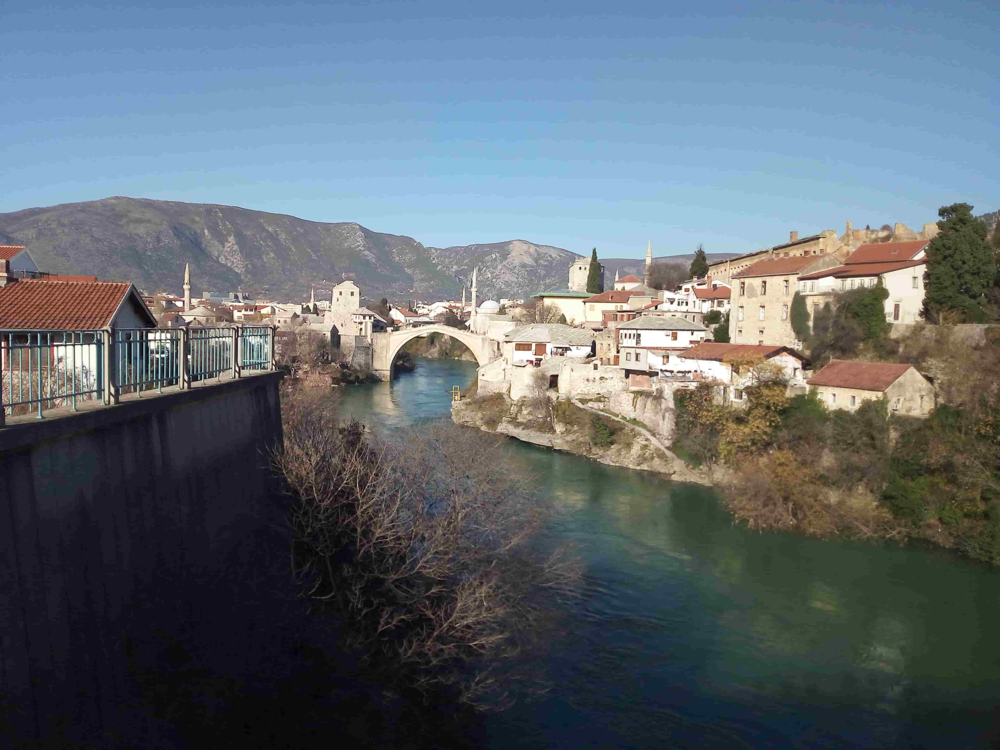

Mostar, Bosnia and Herzegovina
Bosnia and Herzegovina · Herzegovina
Mostar is one of the most distinctive historic cities in Bosnia and Herzegovina, beautifully situated along the Neretva River in the heart of Herzegovina. The city is internationally recognised for its iconic Stari Most, or Old Bridge, a remarkable example of Ottoman-era architecture originally built in the 16th century. Its historic centre, with narrow stone streets, traditional houses, mosques, and lively market areas, reflects centuries of cultural exchange and the city's diverse heritage. The emerald waters of the Neretva and the surrounding rugged landscape create a striking setting for its historic architecture.
Beyond its famous bridge, Mostar offers an atmosphere shaped by history, local traditions, and everyday life. Walking through the old town reveals beautiful architectural details, quiet corners, traditional shops, and different perspectives of the river and its bridges. I was particularly impressed by the contrast between the historic streets and the natural beauty of the Neretva valley. This collection brings together my personal photographs and memories of Mostar, capturing some of the places and details that made my visit memorable.
My Photo Gallery
Explore my personal travel photographs capturing the historic Old Bridge, traditional streets, riverside scenery, and everyday atmosphere of Mostar.
View All Photos ↗